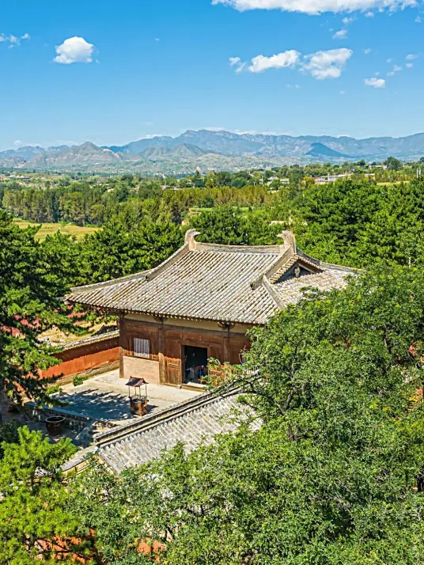

南禅寺
返回主页

南禅寺是中国现存最早的木构建筑，位于山西省忻州市五台县西南的阳白乡李家庄附近的阳白沟小银河的北岸，距东冶镇8公里。距今1200多年。寺宇坐北向南，占地面积3078平方米。寺内主要建设有山门（观音殿）。东西配殿（菩萨殿和龙王殿）和大殿。组成一个四合院式的建设。全国重点文物保护单位。大殿为中国现存最古老的一座唐代木结构建筑，寺中唐代雕塑精湛，堪称唐代雕塑艺术的珍品，具有重要的历史地位和艺术价值。